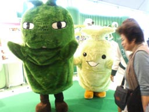

|
■2004/11/27/(Sat)01:21
すこし更新
|

「旅」更新してます。
リッツカールトン宿泊編と、ギリシャ猫旅行。
ギリシャ編は写真だけとりあえずUP。ねこねこねこねこだらけで、ホントにここはギリシャなのかどーなのかわからない写真ですが、どーぞ。
そうそう。
こないだ「ペットのコジマ」でスコティッシュホールドの子猫を抱っこさせてもらったのです。２０万円の猫を触るには、手をアルコール消毒しないといけないのですね。
みーみー鳴くちっちゃくてフアフアのスコティッシュホールドは、抱っこしたら私の襟元をぺろぺろ舐め始めて…。
あまりにもの可愛さにそのままかぷっと口ん中に突っ込みたくなりました。
たべちゃうほど可愛らしいとゆー言葉は、比喩表現でもなんでもなくて、私にとって本気で危険な状態です。
実家の猫も何度か口元をかぷっと口に突っ込んでるし…
|
| |